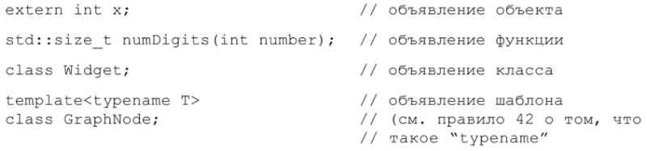
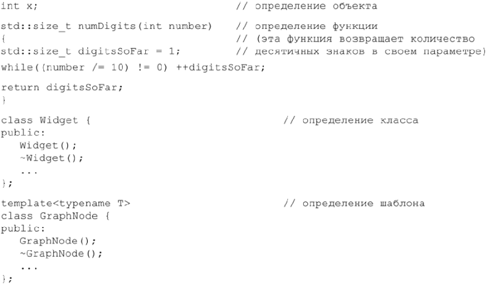
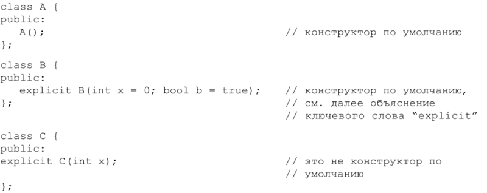
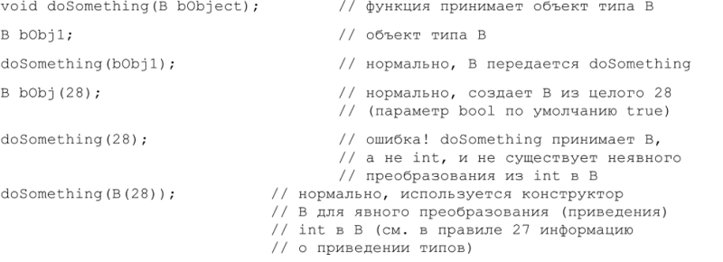
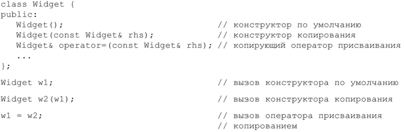
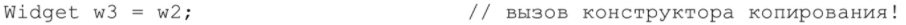
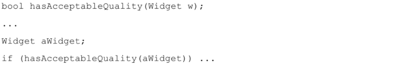
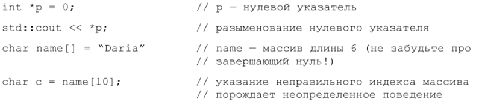

Существует небольшой словарик C++, которым должен владеть каждый программист. Следующие термины достаточно важны, поэтому имеет смысл убедиться, что мы понимаем их одинаково.
Объявление (declaration) сообщает компилятору имя и тип чего-либо, опуская некоторые детали. Объявления выглядят так:
Заметьте, что я называю целое число x «объектом», несмотря на то что это переменная встроенного типа. Некоторые люди под «объектами» понимают только переменные пользовательских типов, но я не принадлежу к их числу. Также отметим, что функция numDigits() возвращает тип std::size_t, то есть тип size_t из пространства имен std. Это то пространство имен, в котором находится почти все из стандартной библиотеки C++. Однако, поскольку стандартная библиотека C (точнее говоря, С89) также может быть использована в программе на C++, символы, унаследованные от C (такие как size_t), могут существовать в глобальном контексте, внутри std, либо в обоих местах, в зависимости от того, какие заголовочные файлы были включены директивой #include. В этой книге я предполагаю, что с помощью #include включаются заголовочные файлы C++. Вот почему я употребляю std::size_t, а не просто size_t. Когда я упоминаю компоненты стандартной библиотеки вне текста программы, то обычно опускаю ссылку на std, полагая, что вы знаете, что такие вещи, как size_t, vector и cout, находятся в пространстве имен std. В примерах же программ я всегда включаю std, потому что в противном случае код не скомпилируется.
Кстати, size_t – это всего-навсего определенный директивой typedef синоним для некоторых беззнаковых типов, которые в C++ используются для разного рода счетчиков (например, количества символов в строках типа char*, количества элементов в контейнерах STL и т. п.). Это также тип, принимаемый функциями operator[] в векторах (vector), деках (deque) и строках (string). Этому соглашению мы будем следовать и при определении наших собственных функций operator[] в правиле 3.
В любом объявлении функции указывается ее сигнатура, то есть типы параметров и возвращаемого значения. Можно сказать, что сигнатура функции – это ее тип. Так, сигнатурой функции numDigits является std::size_t(int), иными словами, это «функция, принимающая int и возвращающая std::size_t». Официальное определение «сигнатуры» в C++ не включает тип возвращаемого функцией значения, но в этой книге нам будет удобно считать, что он все же является частью сигнатуры.
Определение (definition) сообщает компилятору детали, которые опущены в объявлении. Для объекта определение – это то место, где компилятор выделяет для него память. Для функции или шаблона функции определение содержит тело функции. В определении класса или шаблона класса перечисляются его члены:
Инициализация (initialization) – это процесс присваивания объекту начального значения. Для объектов пользовательских типов инициализация выполняется конструкторами. Конструктор по умолчанию (default constructor) – это конструктор, который может быть вызван без аргументов. Такой конструктор либо не имеет параметров вовсе, либо имеет значение по умолчанию для каждого параметра:
Конструкторы классов B и C объявлены в ключевым словом explicit (явный). Это предотвращает их использование для неявных преобразований типов, хотя не запрещает применения, если преобразование указано явно:
Конструкторы, объявленные как explicit, обычно более предпочтительны, потому что предотвращают выполнение компиляторами неявных преобразований типа (часто нежелательных). Если нет основательной причины для использования конструкторов в неявных преобразованиях типов, я всегда объявляю их explicit. Советую и вам придерживаться того же принципа.
Обратите внимание, что в предшествующем примере приведение выделено. Я и дальше буду использовать такое выделение, чтобы подчеркнуть важность излагаемого материала. (Также я выделяю номера глав, но это только потому, что мне кажется, это выглядит симпатично.)
Конструктор копирования (copy constructor) используется для инициализации объекта значением другого объекта того же самого типа, а копирующий оператор присваивания (copy assignment operator) применяется для копирования значения одного объекта в другой – того же типа:
Будьте внимательны, когда видите конструкцию, похожую на присваивание, потому что синтаксис «=» также может быть использован для вызова конструктора копирования:
К счастью, конструктор копирования легко отличить от присваивания. Если новый объект определяется (как w3 в последнем предложении), то должен вызываться конструктор, это не может быть присваивание. Если же никакого нового объекта не создается (как в «w1=w2»), то конструктор не применяется и это – присваивание.
Конструктор копирования – особенно важная функция, потому что она определяет, как объект передается по значению. Например, рассмотрим следующий фрагмент:
Параметр w передается функции hasAcceptableQuality по значению, поэтому в приведенном примере вызова aWidget копируется в w. Копирование осуществляется конструктором копирования из класса Widget. Вообще передача по значению означает вызов конструктора копирования. (Но, строго говоря, передавать пользовательские типы по значению – плохая идея. Обычно лучший вариант – передача по ссылке на константу, подробности см. в правиле 20.)
STL – стандартная библиотека шаблонов (Standard Template Library) – это часть стандартной библиотеки, касающаяся контейнеров (то есть vector, list, set, map и т. д.), итераторов (то есть vector <int>::iterator, set <string>::iterator и т. д.), алгоритмов (то есть for_each, find, sort и т. д.) и всей связанной с этим функциональности. В ней очень широко используются объекты-функции (function objects), то есть объекты, ведущие себя подобно функциям. Такие объекты представлены классами, в которых перегружен оператор вызова operator(). Если вы не знакомы с STL, вам понадобится, помимо настоящей книги, какое-нибудь достойное руководство, посвященное этой теме, ведь библиотека STL настолько удобна, что не воспользоваться ее преимуществами было бы непростительно. Стоит лишь начать работать с ней, и вы сами это почувствуете.
Программистам, пришедшим к C++ от языков вроде Java или C#, может показаться странным понятие неопределенного поведения. По различным причинам поведение некоторых конструкций в C++ действительно не определено: вы не можете уверенно предсказать, что произойдет во время исполнения. Вот два примера такого рода:
Дабы подчеркнуть, что результаты неопределенного поведения невозможно предсказать и что они могут быть весьма неприятны, опытные программисты на C++ часто говорят, что программы с неопределенным поведением могут стереть содержимое жесткого диска. Это правда: такая программа может стереть ваш жесткий диск, но может этого и не сделать. Более вероятно, что она будет вести себя по-разному: иногда нормально, иногда аварийно завершаться, а иногда – просто выдавать неправильные результаты. Мудрые программисты на C++ придерживаются правила – избегать неопределенного поведения. В этой книге во многих местах я указываю, как это сделать.
Иной термин, который может смутить программистов, пришедших из других языков, – это интерфейс. В Java и. NET-совместимых языках интерфейсы являются частью языка, но в C++ ничего подобного нет, хотя в правиле 31 рассматривается некоторое приближение. Когда я использую термин «интерфейс», то обычно имею в виду сигнатуры функций, доступные члены класса («открытый интерфейс», «защищенный интерфейс», «закрытый интерфейс») или выражения, допустимые в качестве параметров типа для шаблонов (см. правило 41). То есть под интерфейсом я понимаю общую концепцию проектирования.
Понятие клиент – это нечто или некто, использующий написанный вами код (обычно через интерфейсы). Так, например, клиентами функции являются ее пользователи: части кода, которые вызывают функцию (или берут ее адрес), а также люди, которые пишут и сопровождают такой код. Клиентами класса или шаблона являются части программы, использующие этот класс или шаблон, а равно программисты, которые пишут или сопровождают эти части. Когда речь заходит о клиентах, я обычно имею в виду программистов, поскольку именно они могут быть введены в заблуждение или недовольство плохо разработанным интерфейсом. Коду, который они пишут, такие эмоции недоступны.
Возможно, вы не привыкли думать о клиентах, но я постараюсь убедить вас в необходимости облегчить им жизнь, насколько это возможно. В конце концов, вы сами – клиент программного обеспечения, которое разрабатывал кто-то другой. Ведь вы хотели бы, чтоб его авторы облегчили вам работу? Помимо того, рано или поздно вы окажетесь в положении, когда сами станете клиентом собственного кода (то есть будете использовать код, написанный вами), и тогда оцените, что при разработке интерфейсов нужно помнить об интересах клиентов.
В этой книге я часто обращаю внимание на различие между функциями и шаблонами функций, а также между классами и шаблонами классов. Это не случайно, ведь то, что справедливо для одного, часто справедливо и для другого. В ситуациях, когда это не так, я делаю различие между классами, функциями и шаблонами, из которых порождаются классы и функции.